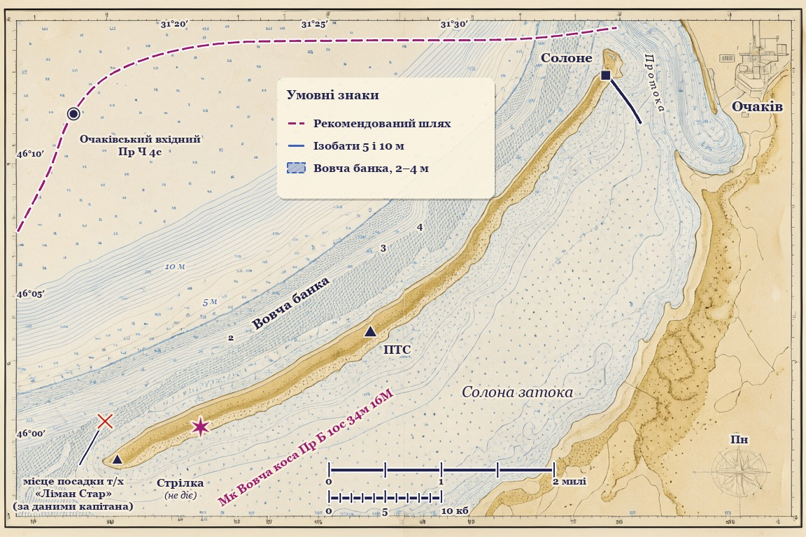

| Умовні позначення | |
|---|---|
| ★ Мк Вовча коса | маяк; характеристика вогню — Пр Б 10 с, висота вогню 34 м, дальність 16 М |
| Пр Ч 4 с | Очаківський вхідний буй |
| (не діє) | знак «Стрілка» Вовчої коси |
| ПТС | пост технічного спостереження на дюні |
| штрихування | мілководдя (Вовча банка), глибини 2–4 м |
| тонкі лінії | ізобати 5 і 10 м |
| пунктир | рекомендований шлях |
| × | місце посадки т/х «Ліман Стар» — позначка бюро за даними капітана |
Глибини — в метрах. Відстані — в морських милях. Напрями — істинні.